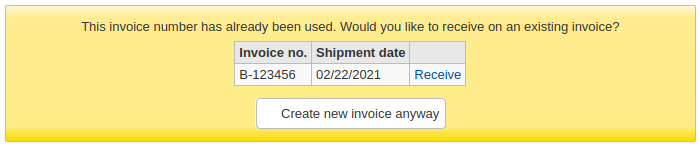

采访
在这里： 更多 > 管理 > 系统配置 > 采访
EDIFACT
Edifact发票导入
Asks: ___ 自动导入下载的 EDIFACT 发票文件。
默认：启用
值：
- 启用
- 关闭
简介：
- This feature allows libraries to delay the importing of EDI invoices until a time of their choosing. If the syspref is set to ‘Don’t’ the invoices are imported into the database but the invoice processing is skipped. Instead, any invoice file listed in EDIfact messages with a status of ‘New’ will have an ‘Import’ button to process the invoice manually.
Policy
AcqCreateItem
Asks: Create an item when ___.
Default: placing an order
值：
- cataloging a record
- placing an order
- receiving an order
简介：
- This preference lets you decide when you’d like to create an item record in Koha.
- If you choose to add an item record when ‘placing an order’, you will enter item information in as you add records in your basket.
- If you choose to add the item when ‘receiving an order’ you will be asked for item record information when you’re receiving orders in acquisitions.
- If you choose to add the item when ‘cataloging a record’ then item records will not be created in acquisitions at all. You will need to go to the cataloging module to add the items.
- Note that this setting can be overridden when creating a basket.
AcqEnableFiles
Asks: ___ enable the ability to upload and attach arbitrary files to invoices.
Default: Don’t
值：
- 启用
- 关闭
简介：
- This preference controls whether or not you allow the uploading of invoice files via the acquisitions module.
AcqItemSetSubfieldsWhenReceiptIsCancelled
Asks: Upon cancelling a receipt, update the item’s subfields if they were created when placing an order (e.g. o=5|a=”bar foo””). ___
简介：
- This preference is used in conjunction with the AcqItemSetSubfieldsWhenReceived preference. If you have the system set to enter default values when you receive you will want to have those values revert back if the receipt is cancelled. This preference allows you to do that.
AcqItemSetSubfieldsWhenReceived
Asks: Upon receiving items, update their subfields if they were created when placing an order (e.g. o=5|a=”foo bar”). ___
简介：
- This preference allows you to set default values for items that you receive via acquisitions. Enter the data as subfield=value and split your values with a bar ( | ). For example you can remove the Ordered status on the item automatically when you receive it just by entering 7=0 in this preference. That will set the Not for Loan status (subfield 7) to 0 which is available.
AcqViewBaskets
Asks: Show baskets ___
Default: created or managed by staff member
值：
- in system, regardless of owner
- from staff member’s library
- created or managed by staff member
简介：
- When in acquisitions, this preference allows you to control whose baskets you can see when looking at a vendor.
- The default value of ‘created or managed by staff member’ makes it so that you only see the baskets you created.
- Choosing to see baskets ‘from staff member’s library’ will show you the baskets created by anyone at the branch you’re logged in at.
- Finally, you can choose to set this preference to show you all baskets regardless of who created it (‘in system, regardless of owner’).
- Regardless of which value you choose for this preference, superlibrarians can see all baskets created in the system.
AcqWarnOnDuplicateInvoice
Asks: ___ when the librarian tries to create an invoice with a duplicate number.
Default: Do not warn
值：
- Do not warn
- Warn
简介：
- When set to ‘Warn’, Koha will let staff know if an invoice with the same number has already been created. The staff member will have a choice to either receive on the existing invoice or create a new one with the same number.

BasketConfirmations
Asks: When closing or reopening a basket, ___.
Default: always ask for confirmation
值：
- always ask for confirmation
- do not ask for confirmation
Descriptions:
- This preference adds the option to skip confirmations on closing and reopening a basket. If you skip the confirmation, you do not create a new basket group.
ClaimsBccCopy
Asks: ___ blind copy (BCC) to logged in user when sending serial or acquisitions claims notices.
Default: Don’t send
值：
- Don’t send
- Send
简介：
- This system preference allows you to choose whether or not you want to send a copy of the claim email to the staff member when claiming a late serial issue or a late acquisitions order.
CurrencyFormat
Asks: Display currencies using the following format ___
Default: 360,000.00 (US)
值：
- 360’000.00 (CH)
- 360 000,00 (FR)
- 360,000.00 (US)
简介：
- This system preference controls how prices are displayed in Koha.
EmailPurchaseSuggestions and EmailAddressForSuggestions
Asks: Choose email address that new purchase suggestions will be sent to: ___. If you choose EmailAddressForSuggestions you have to enter a valid email address: ___
Default: none
值：
- none
- email address of branch
- EmailAddressForSuggestions
- KohaAdminEmailAddress
简介：
- If you want Koha to send purchase suggestions via email, choose which email
address it should send them to
- none will deactivate this feature
- email address of branch will use the email address entered in the libraries settings
- if you choose EmailAddressForSuggestions, enter the email address in the input field
- if you choose KohaAdminEmailAddress, the email will be sent to the main email address, as entered in KohaAdminEmailAddress
- You can customize the message that is sent with the Notices and slips tool, the letter code is NEW_SUGGESTION
MarcFieldsToOrder
Asks: Set the mapping values for a new order line created from a MARC record in a staged file.
简介：
This preference includes MARC fields to check for order information to use when you order from a new .mrc file or when you order from a staged file in acquisitions. You can use the following fields:
- price,
- quantity,
- budget_code,
- discount,
- sort1, and
- sort2.
For example:
price: 947$a|947$c quantity: 969$h budget_code: 922$a
警告
Requires YAML syntax to work
This means
- Make sure there is NO space between the field name and the colon
- Make sure there IS a space between the colon and the value
- Make sure each pair is on its own line
MarcItemFieldsToOrder
Asks: Set the mapping values for new item records created from a MARC record in a staged file.
简介：
- This preference automatically generates items in Koha with populated
information based on a 9XX field and subfield. You can use the following
fields:
- homebranch,
- holdingbranch,
- itype,
- nonpublic_note,
- public_note,
- loc,
- ccode,
- notforloan,
- uri,
- copyno,
- price,
- replacementprice, and
- itemcallnumber.
- You can also use the following special fields:
- quantity, and
- budget_code.
For example:
homebranch: 975$a
holdingbranch: 975$b
public_note: 975$z
loc: 975$c
警告
Requires YAML syntax to work
This means
- Make sure there is NO space between the field name and the colon
- Make sure there IS a space between the colon and the value
- Make sure each pair is on its own line
OrderPriceRounding
Asks: ___ to nearest cent.
Default: Don’t round
值：
- Don’t round
- Round
简介：
- This system preference determines whether full precision values or rounded values should be used in price calculations.
- This is particularly important when your tax rates have more decimals than your currency
PurgeSuggestionsOlderThan
Asks: Keep accepted or rejected purchase suggestions for a period of ___ days.
警告
Leave this field empty if you don’t want to activate this automatic feature.
简介：
- Enter the number of days after which you want to automatically delete accepted or rejected purchase suggestions.
- For example: [30] Sets purgation of suggestions for those older than 30 days.
注解
This system preference is used when the cronjob purge_suggestions.pl is active and called without a specific number of days.
TaxRates
Asks: Tax rates are ___
Default: 0
简介：
- This preference allows the library to define goods and services tax rates for acquisitions.
- The first item in the list will be selected by default.
注解
Enter this value as a number (.06) versus a percent (6%).
For more than one value, separate with | (pipe).
For example
0|0.05|0.1496
will give you choices of tax rates of 0%, 5% and 14.96%
警告
The database only accepts values up to 4 decimals, further values will be rounded.
UniqueItemFields
Asks: The following database columns should be unique in an item: ___
Default: barcode
简介：
- If this preference is left blank when adding items in acquisitions there will be no check for uniqueness. This means that a duplicate barcode can be created in acquisitions which will cause errors later when checking items in and out.
UseACQFrameworkForBiblioRecords
Asks: ___ the framework ‘ACQ’ for bibliographic records fields
Default: Don’t use
值：
- Don’t use
- Use
简介：
- This system preference allows you to use the ACQ bibliographic framework to customize the bibliographic record fields that are shown when ordering from acquisitions
- Note that this does not affect the item fields (in MARC21, field 952), which are always taken from the ACQ framework regardless of this system preference
Printing
OrderPdfFormat
Asks: Use the ___ layout when printing basket groups.
Default: English 3-page
值：
注解
Values will depend on the installed languages in your Koha installation.
- 2-page
- 3-page
简介：
- This preference determines how basket groups are printed when exported as PDFs.
- A 2-page layout will have vendor information on the first page and ordered titles on the second page
- A 3-page layout will additionally have a page with basket informations